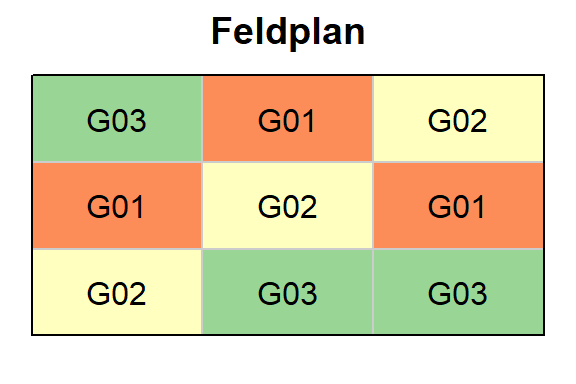
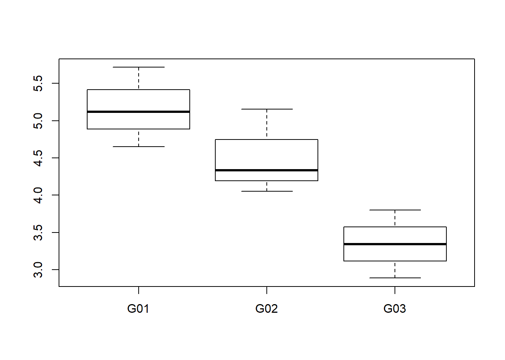
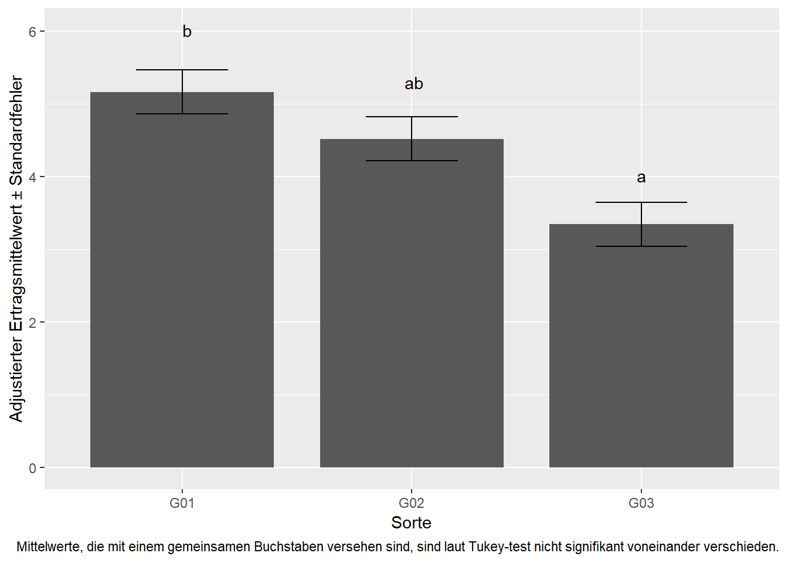

1 Trt Factor - CRD
Datensatz
library(data.table) # bessere Datenmanipulation
library(ggplot2); library(ggfortify) # bessere Plots
library(emmeans) # adjustierte MittelwerteWir haben einen Datensatz aus einem Feldversuch, in welchem der Ertrag von 3 Sorten geprüft wurde. Der Versuch hatte 3 Wiederholungen und wurde als vollständig randomisierte Anlage (=Completely Randomized Design) angelegt. Hier mehr Infos zu Versuchsdesigns

crd## gen yield
## 1: G02 4.3350
## 2: G03 3.3420
## 3: G01 5.1202
## 4: G03 3.7999
## 5: G01 5.7161
## 6: G02 5.1566
## 7: G01 4.6512
## 8: G02 4.0510
## 9: G03 2.8873Deskriptive Statistik
Erst wollen wir ein Gefühl für den Datensatz bekommen und betrachten einige Kennzahlen zu den Daten, sowie einen Plot.
summary(crd)## gen yield
## G01:3 Min. :2.887
## G02:3 1st Qu.:3.800
## G03:3 Median :4.335
## Mean :4.340
## 3rd Qu.:5.120
## Max. :5.716plot(y=crd$yield, x=crd$gen)
Schließende Statistik
Lineares Modell
Wir können uns nun entschließen die Daten mittels eines linearen Modells zu analysieren. Der Ertrag ist unsere metrische Zielvariable. ‘Sorte’ ist ein qualitativer Faktor.
mod <- lm(yield ~ gen, data=crd)Zunächst sollten nun die Residuenplots (z.b. mit autoplot(mod)) evaluiert werden, was hier aber übersprungen wird. Erst dann ist eine Varianzanalyse zulässig.
Varianzanalyse
anova(mod)## Analysis of Variance Table
##
## Response: yield
## Df Sum Sq Mean Sq F value Pr(>F)
## gen 2 5.1022 2.55109 9.3023 0.0145 *
## Residuals 6 1.6455 0.27424
## ---
## Signif. codes: 0 '***' 0.001 '**' 0.01 '*' 0.05 '.' 0.1 ' ' 1Der F-Test für den Faktor ‘Sorte’ zeigt einen p-Wert < 0.05 und somit signifikante Unterschiede zwischen den Sorten. Demnach wissen wir nun, dass es mindestens einen signifikanten Unterschied zwischen den Sorten gibt, aber nicht zwischen welchen Sorten. Um dies herauszufinden ist es üblich multiple Mittelwertvergleiche durchzuführen (z.B. t-test oder Tukey-test).
Multipler Mittelwertvergleich
Mit emmeans() erhalten wir in einem Zug sowowhl die adjustierten Mittelwerte (und deren Standardfehler) für jede Sorte, als auch die Differenzen zwischen allen Sortenmittelwerten.
means <- emmeans(mod, pairwise ~ gen, adjust="tukey")
means$emmeans # Mittelwerte ## gen emmean SE df lower.CL upper.CL
## G01 5.162500 0.3023478 6 4.422682 5.902318
## G02 4.514200 0.3023478 6 3.774382 5.254018
## G03 3.343067 0.3023478 6 2.603248 4.082885
##
## Confidence level used: 0.95means$contrasts # Differenzen zwischen Mittelwerten## contrast estimate SE df t.ratio p.value
## G01 - G02 0.648300 0.4275844 6 1.516 0.3488
## G01 - G03 1.819433 0.4275844 6 4.255 0.0127
## G02 - G03 1.171133 0.4275844 6 2.739 0.0754
##
## P value adjustment: tukey method for comparing a family of 3 estimatesBeim Betrachten der p-Werte der Differenzen fällt auf, dass nur die Differenz zwischen G01 und G03 signifikant ist, nicht aber die Unterschiede G01-G02 und G02-G03. Es ist üblich für solche Resultate die Buchstabendarstellung anzuwenden.
means <- CLD(means$emmeans, Letters=letters)
means## gen emmean SE df lower.CL upper.CL .group
## G03 3.343067 0.3023478 6 2.603248 4.082885 a
## G02 4.514200 0.3023478 6 3.774382 5.254018 ab
## G01 5.162500 0.3023478 6 4.422682 5.902318 b
##
## Confidence level used: 0.95
## P value adjustment: tukey method for comparing a family of 3 estimates
## significance level used: alpha = 0.05Das CLD() statement hat der Mittelwerttabelle lediglich eine weitere Spalte hinzugefügt, in denen Buchstaben zu sehen sind. Für letztere gilt, dass zwei Mittelwerte, die einen gemeinsamen Buchstaben aufweisen, nicht sich signifikant voneinander unterscheiden.
Ergebnisaufbereitung
Schließlich kann man die Ergebnisse final in einem Plot darstellen. Gängig ist dafür ein Balkendiagramm:
ggplot(data=means, aes(x=gen)) +
geom_bar(aes(y=emmean), stat="identity", width=0.8) +
geom_errorbar(aes(ymin=emmean-SE, ymax=emmean+SE), width=0.4) +
geom_text(aes(y=(emmean+SE)*1.1, label=.group)) +
labs(y="Adjustierter Ertragsmittelwert ± Standardfehler", x="Sorte",
caption="Mittelwerte, die mit einem gemeinsamen Buchstaben versehen sind, sind laut Tukey-test nicht signifikant voneinander verschieden.")
Stattdessen kann aber auch ein Plot erstellt werden, der informativer ist, da er gleichzeitig Rohdaten und geschätzte Ergebnisse abbildet. Desweiteren fällt bei genauem Betrachten auf, dass die Buchstaben im Balkendiagramm nicht komplett zentriert sind. Das liegt daran, dass die Spalte mit den Buchstaben auch Leerzeichen enthält, also “a”, “ab” und " b“. Wir werden also auch diese Leerzeichen entfernen.
means$.group <- gsub(" ", "", means$.group, fixed = TRUE) # Leerzeichen entfernen
ggplot() + theme_classic() +
# Rohdaten (crd)
geom_boxplot(data=crd, aes(x=gen, y=yield), outlier.shape=NA, width=0.6) +
geom_jitter(data=crd, aes(x=gen, y=yield), width=0.25, height=0, shape=1) +
# Ergebnisse (means)
geom_point(data=means, aes(x=as.numeric(gen)+0.4, y=emmean), col="red", shape=16, size=2) +
geom_errorbar(data=means, aes(x=as.numeric(gen)+0.4, ymin=lower.CL, ymax=upper.CL), col="red", width=0.1) +
geom_text(data=means, aes(x=as.numeric(gen)+0.5, y=emmean, label =.group), col="red") +
labs(y="Schwarz: Ertrag\nRot: Adjustierter Ertragsmittelwert ± 95% Konfidenzintervall", x="Sorte",
caption="Mittelwerte, die mit einem gemeinsamen Buchstaben versehen sind, sind laut Tukey-test nicht signifikant voneinander verschieden.")